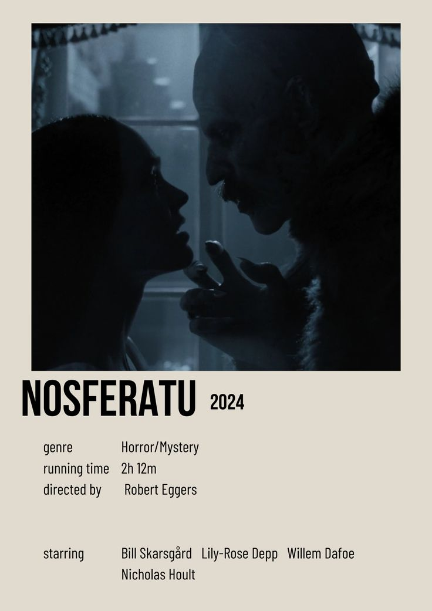
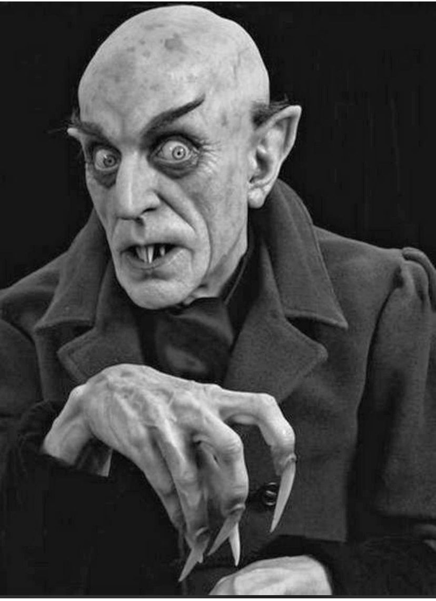

Ellen
Ellen Hutter (interpretada por Lily-Rose Depp): A jovem esposa de Thomas Hutter, que passa a ter visões e ligações sombrias com o Conde Orlok (equivalente a Mina Harker).

Nosferatu (1922) é um clássico do cinema mudo expressionista alemão, dirigido por F. W. Murnau. Estrelado por Max Schreck no papel do vampiro Conde Orlok, o filme conta a história do monstro que desenvolve uma obsessão pela esposa de seu corretor de imóveis e espalha a peste ao chegar à cidade do casal.
A obra é uma adaptação não autorizada de Drácula (1897), de Bram Stoker, o que levou a viúva do autor a processar a produtora. A justiça ordenou a destruição de todas as cópias do longa, mas algumas bobinas sobreviveram. Hoje em domínio público, o filme é aclamado universalmente como uma obra-prima influente que ajudou a moldar as bases do gênero de terror no cinema.
O filme teve sua adaptação no ano de 2024. Infelizmente, a versão de 2024 não está disponível no drive, porém tem como ver na Amazon Prime ou no Google Play.
Em 1838, o corretor Thomas Hutter viaja à Transilvânia a pedido de seu chefe, Knock, para vender uma casa em Wisborg ao Conde Orlok. Apesar dos avisos dos moradores e do estranho comportamento do Conde — que tenta chupar seu sangue quando ele se corta e fica fascinado pelo retrato de sua esposa, Ellen —, Hutter descobre tarde demais que Orlok é um vampiro. Enquanto Hutter fica preso no castelo, Orlok viaja para Wisborg dentro de um caixão a bordo de um navio infestado de ratos, matando toda a tripulação.
A chegada de Orlok traz uma epidemia fatal à cidade. Enquanto Knock enlouquece e é preso, Ellen lê o livro sobre vampiros de Hutter e descobre que a única forma de destruir a criatura é com o sacrifício voluntário de uma mulher pura, atraindo-a até o amanhecer. Ellen convida Orlok ao seu quarto e o distrai se oferecendo como vítima; quando o sol nasce, os raios solares fazem o Conde evaporar em fumaça. Ellen morre nos braços de Hutter, mas seu sacrifício liberta a cidade da maldição.

Conde Orlok / Nosferatu (interpretado por Bill Skarsgård): O vampiro milenar e antagonista central, obcecado por Ellen Hutter (equivalente ao Conde Drácula).
Ellen Hutter (interpretada por Lily-Rose Depp): A jovem esposa de Thomas Hutter, que passa a ter visões e ligações sombrias com o Conde Orlok (equivalente a Mina Harker).

Thomas Hutter (interpretado por Nicholas Hoult): O jovem corretor de imóveis enviado à Transilvânia para fechar negócio com Orlok, tornando-se prisioneiro do vampiro (equivalente a Jonathan Harker).

Professor Albin Eberhart Von Franz (interpretado por Willem Dafoe): Um excêntrico professor e ocultista que ajuda a investigar a ameaça sobrenatural (equivalente ao Professor Abraham Van Helsing).